Cada objeto debe justificar su espacio.
Revisa crafteos, consumibles y equipo de progresión sin perderte entre secciones. Las recetas siguen siendo interactivas en PC y móvil.
Utilidades Portátiles
Cuando una expedición se alarga, volver a la base puede costar más que los recursos que llevas. Estas herramientas convierten parte de tu infraestructura en equipo de campo.
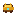
Alcancía
Abre el Banco desde donde estés. Úsala para revisar, depositar o retirar tus ScuadCoins sin regresar al Banco Central.
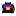
Tienda Portátil
Despliega un acceso de campaña a la Tienda de Pociones, la Tienda de Comida y la Urna de Oro. Ideal para preparar una pelea sin abandonar la zona.
Resurrección de Campo
A partir de Fase 3, puedes usar un Alma de Jugador directamente para intentar revivir a un compañero sin llegar a la Fosa de Almas. Es un recurso de emergencia y exige Tótems de la Inmortalidad.
Arsenal y consumibles por fase
Progresión ordenada: cada grupo reúne los objetos que empiezan a formar parte de la progresión en esa fase. La wiki muestra todas las etapas para que puedas planear tu ruta de supervivencia.
Preparación
Equipo base, economía y supervivencia inicial.
ScuadCoin
Moneda física del Realm. Se obtiene principalmente derrotando enemigos y completando eventos.
Alma de Jugador
Llave de resurrección. Compra una en la Urna de Oro y llévala a la Fosa de Almas para recuperar a un compañero. En el endgame también funciona como plantilla de herrería para crear el Filo del Horizonte Roto.
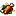
Ración del Superviviente
Comida de emergencia que estabiliza tus heridas con absorción y una breve regeneración.
Sin forma: los ingredientes pueden colocarse en cualquier posición.
El Despertar
Movilidad, escape y recursos para el Nether.
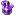
Poción de Pánico
Velocidad III durante 20 s y Resistencia I durante 10 s. Ideal para romper una emboscada y ganar distancia.
Poción de Escape
Invisibilidad y Velocidad II durante 15 s, además de Caída Lenta durante 10 s.
Tónico del Minero
Prisa II y Visión Nocturna durante 2 minutos, más Resistencia al Fuego durante 30 s.
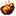
Pan Ígneo
Provisión compacta para expediciones; se vende en paquetes de dos desde Fase 1.
Sin forma: los ingredientes pueden colocarse en cualquier posición.
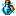
Tónico del Explorador
Consumible de movilidad y exploración pensado para rutas peligrosas y retirada rápida.
Supervivencia
Consumibles avanzados para End, Doom y combates prolongados.
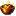
Estofado Dorado
Fortalece tu vida temporalmente y acelera la recuperación durante unos segundos.
Sin forma: los ingredientes pueden colocarse en cualquier posición.
Elixir del Guardián
Absorción IV durante 2 minutos y Resistencia II durante 1 minuto.
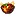
Estofado del Acechador
Comida avanzada para expediciones de Fase 2, pensada para sostener combates y exploración prolongada.
Sin forma: los ingredientes pueden colocarse en cualquier posición.
Pesadilla
Curación y defensa para amenazas de alta presión.
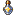
Suero Purificador
Limpia veneno, wither, debilidad, lentitud, ceguera, oscuridad, hambre, fatiga y náusea; después aplica Regeneración II.
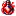
Poción de Ultra Curación
Restaura toda tu salud inmediatamente y añade Regeneración III durante 10 s.
Tónico del Baluarte
Preparado defensivo de alto nivel para aguantar asedios, Doom y jefes en fases avanzadas.
Muerte Inminente
Consumibles de poder extremo para encuentros de élite.
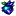
Manzana del Eco
Aumento de Salud III durante 2 minutos y Fuerza II durante 30 s. El precio del poder es una breve Oscuridad.
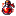
Brebaje Berserker
Fuerza III y Velocidad II durante 30 s, a cambio de Hambre III durante 15 s.
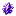
Esquirla del Ocaso
Material exclusivo de Fase 4+ y compuerta de la progresión Horizonte. No posee receta: los minijefes garantizan progreso, el Ghast Infernal puede entregar 1–2, los élites tienen una posibilidad de soltarla y los cofres importantes del Doom pueden contenerla.
Apocalipsis Total
Recursos finales para el cierre del evento.
Notch Líquida
Absorción IV y Resistencia I durante 2 minutos, además de Regeneración II durante 30 s.
Almas de Jefes y Netherite
La mejora vanilla a Netherite está restringida. Las piezas de armadura usan las almas de los jefes como plantillas de herrería; la espada y las herramientas no pueden saltarse la progresión con la plantilla vanilla.
Alma Ígnea
La entrega el Ghast Infernal. Funciona como plantilla para el casco de Netherite y vuelve a ser necesaria para ascender el Yelmo de la Perdición al Horizonte Roto.
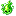
Alma Gelatinosa
La entrega el Giga Slime. Funciona como plantilla para la pechera de Netherite y vuelve a ser necesaria para ascender la Coraza de la Perdición al Horizonte Roto.
Alma Punzante
La entrega el Emperador. Funciona como plantilla para las grebas de Netherite y vuelve a ser necesaria para ascender las Grebas de la Perdición al Horizonte Roto.
Alma Aullante
La entrega el Devastador Espectral. Funciona como plantilla para las botas de Netherite y vuelve a ser necesaria para ascender las Botas de la Perdición al Horizonte Roto.
Espada de Netherite: la mejora vanilla con Plantilla de Netherite está bloqueada en el evento. Puede obtenerse mediante el botín autorizado de SR, incluyendo determinados jefes y cofres de alto nivel del Doom, y después sirve como base para fabricar la Espada de la Perdición.
Fase 4: Horizonte Roto
Pre-Coloso: Horizonte Roto ya forma parte de la progresión de Fase 4. Tener Almas Ígneas desde fases anteriores no permite adelantarlo, porque cada Fragmento del Horizonte exige una Esquirla del Ocaso obtenible únicamente desde Fase 4.
Fragmento del Horizonte
Material de ascensión fabricado de uno en uno. La Esquirla del Ocaso es la llave que impide crear estos fragmentos antes de Fase 4.
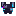
Armadura del Horizonte Roto
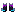
Mejora cada pieza de Perdición en la mesa de herrería usando el alma correspondiente como plantilla y un Fragmento del Horizonte como material. El set completo suma 32 puntos de protección y conserva Fuerza I, Resistencia II, Resistencia al Fuego y Visión Nocturna; añade Velocidad I, Salto II y 10 corazones extra.
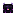
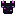
Filo del Horizonte Roto
Ascensión de la Espada de la Perdición: 16 de daño base, irrompible y con encantabilidad 22.